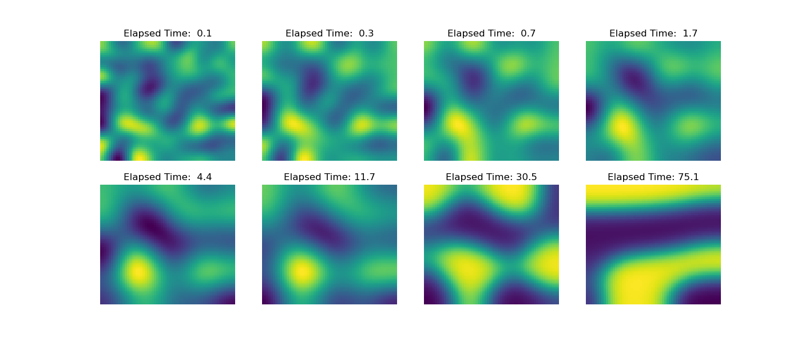

Note
Click here to download the full example code
Operators: Cahn Hilliard¶
This example is based on the example in the FiPy library. Please see their documentation for more information about the Cahn-Hilliard equation.
The “Cahn-Hilliard” equation separates a field \( \phi \) into 0 and 1 with smooth transitions.
Where \( f \) is the energy function \( f = ( a^2 / 2 )\phi^2(1 - \phi)^2 \) which drives \( \phi \) towards either 0 or 1, this competes with the term \(\epsilon^2 \nabla^2 \phi \) which is a diffusion term that creates smooth changes in \( \phi \). The equation can be factored:
Here we will need the derivatives of \( f \):
The implementation below uses backwards Euler in time with an exponentially increasing time step. The initial \( \phi \) is a normally distributed field with a standard deviation of 0.1 and mean of 0.5. The grid is 60x60 and takes a few seconds to solve ~130 times. The results are seen below, and you can see the field separating as the time increases.
Out:
0 0.006737946999085467
10 0.09636267449939614
20 0.24412886910986079
30 0.4877541372545481
40 0.8894242989247158
50 1.5516664382758794
60 2.643519139778099
70 4.443679913216204
80 7.411643271063606
90 12.304987589805194
100 20.37274845297408
110 33.67423739500265
120 55.604685145707705
/home/travis/build/simpeg/discretize/examples/plot_cahn_hilliard.py:116: UserWarning: Matplotlib is currently using agg, which is a non-GUI backend, so cannot show the figure.
plt.show()
from __future__ import print_function
import discretize
from pymatsolver import Solver
import numpy as np
import matplotlib.pyplot as plt
def run(plotIt=True, n=60):
np.random.seed(5)
# Here we are going to rearrange the equations:
# (phi_ - phi)/dt = A*(d2fdphi2*(phi_ - phi) + dfdphi - L*phi_)
# (phi_ - phi)/dt = A*(d2fdphi2*phi_ - d2fdphi2*phi + dfdphi - L*phi_)
# (phi_ - phi)/dt = A*d2fdphi2*phi_ + A*( - d2fdphi2*phi + dfdphi - L*phi_)
# phi_ - phi = dt*A*d2fdphi2*phi_ + dt*A*(- d2fdphi2*phi + dfdphi - L*phi_)
# phi_ - dt*A*d2fdphi2 * phi_ = dt*A*(- d2fdphi2*phi + dfdphi - L*phi_) + phi
# (I - dt*A*d2fdphi2) * phi_ = dt*A*(- d2fdphi2*phi + dfdphi - L*phi_) + phi
# (I - dt*A*d2fdphi2) * phi_ = dt*A*dfdphi - dt*A*d2fdphi2*phi - dt*A*L*phi_ + phi
# (dt*A*d2fdphi2 - I) * phi_ = dt*A*d2fdphi2*phi + dt*A*L*phi_ - phi - dt*A*dfdphi
# (dt*A*d2fdphi2 - I - dt*A*L) * phi_ = (dt*A*d2fdphi2 - I)*phi - dt*A*dfdphi
h = [(0.25, n)]
M = discretize.TensorMesh([h, h])
# Constants
D = a = epsilon = 1.
I = discretize.utils.speye(M.nC)
# Operators
A = D * M.faceDiv * M.cellGrad
L = epsilon**2 * M.faceDiv * M.cellGrad
duration = 75
elapsed = 0.
dexp = -5
phi = np.random.normal(loc=0.5, scale=0.01, size=M.nC)
ii, jj = 0, 0
PHIS = []
capture = np.logspace(-1, np.log10(duration), 8)
while elapsed < duration:
dt = min(100, np.exp(dexp))
elapsed += dt
dexp += 0.05
dfdphi = a**2 * 2 * phi * (1 - phi) * (1 - 2 * phi)
d2fdphi2 = discretize.utils.sdiag(a**2 * 2 * (1 - 6 * phi * (1 - phi)))
MAT = (dt*A*d2fdphi2 - I - dt*A*L)
rhs = (dt*A*d2fdphi2 - I)*phi - dt*A*dfdphi
phi = Solver(MAT)*rhs
if elapsed > capture[jj]:
PHIS += [(elapsed, phi.copy())]
jj += 1
if ii % 10 == 0:
print(ii, elapsed)
ii += 1
if plotIt:
fig, axes = plt.subplots(2, 4, figsize=(14, 6))
axes = np.array(axes).flatten().tolist()
for ii, ax in zip(np.linspace(0, len(PHIS)-1, len(axes)), axes):
ii = int(ii)
M.plotImage(PHIS[ii][1], ax=ax)
ax.axis('off')
ax.set_title('Elapsed Time: {0:4.1f}'.format(PHIS[ii][0]))
if __name__ == '__main__':
run()
plt.show()
Total running time of the script: ( 0 minutes 8.491 seconds)